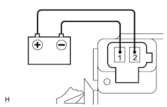

SKID CONTROL BUZZER > INSPECTION |
| 1. INSPECT SKID CONTROL BUZZER ASSEMBLY |
|  |
Apply battery voltage to the skid control buzzer and check that the buzzer sounds.
| Measurement Condition | Specified Condition |
| Battery positive (+) voltage → Terminal 2 | Skid control buzzer sounds |
| Battery negative (-) voltage → Terminal 1 |